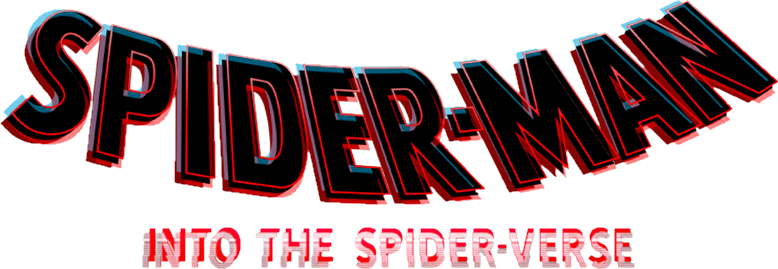
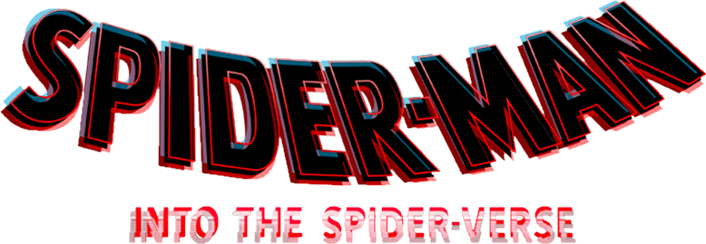
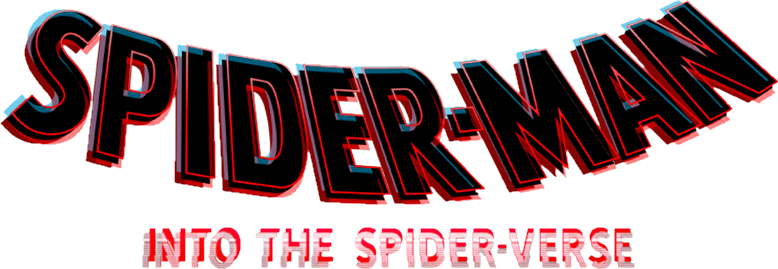
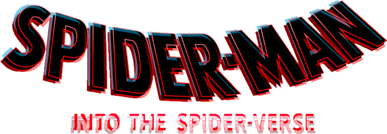

Spider-Man Into The Spider-Verse About
 



Miles Morales, a teenager who admires Spider-Man, struggles living up to the expectations of his parents, especially his father, police officer Jefferson Davis, who sees Spider-Man as a menace. After school, Miles secretly visits his uncle Aaron Davis, who brings Miles to an abandoned subway station where he can paint graffiti. While there, Miles is unknowingly bitten by a radioactive spider and, the next day, discovers it gave him spider-like abilities, including the power to turn invisible, and to emit electric venom blasts.
Searching for the spider, Miles returns to the station and unintentionally discovers a particle accelerator built by Wilson Fisk, who wishes to access parallel universes to find alternative versions of his wife and son who died in a car crash. Spider-Man tries to disable it while fighting Fisk's enforcers, Green Goblin and Prowler. Spider-Man is gravely wounded by an explosion during the battle which kills Green Goblin. Spider-Man gives Miles, whom he previously found, a USB drive to disable the accelerator and warns that the machine could destroy the city if turned on again. Miles then watches in horror as Fisk kills Spider-Man. Prowler spots Miles and pursues him throughout the subway, with Miles narrowly escaping. The news of Spider-Man's death then spreads all over the city.
After purchasing a Spider-Man costume, Miles tries out his newfound abilities but in the process damages the USB drive. At Spider-Man's grave, Miles meets Peter B. Parker, a depressed and worn-down version of Spider-Man from another dimension who is divorced from his wife Mary Jane and whose Aunt May is deceased. Peter reluctantly agrees to train Miles in exchange for help stealing data to create a new drive. While breaking into Kingpin's research facility, they are confronted by Fisk's chief scientist Olivia Octavius, who reveals that Peter will deteriorate and die if he stays longer in their dimension. Miles and Peter are then rescued by Gwen Stacy, another dimension-displaced heroine. Gwen, Peter and Miles find Peter's aunt, May Parker, who is sheltering dimension-displaced heroes Spider-Man Noir, Spider-Ham, and Peni Parker, who are also deteriorating. Miles offers to disable the accelerator, but is overwhelmed after being judged for his inexperience and inability to control his powers.
Miles retreats to Aaron's home, where he discovers that Aaron is Prowler. He returns to May's house, where Peni has repaired the drive; however, he is followed by Fisk, Prowler, Octavius, Scorpion and Tombstone, leading to a brawl. Miles flees May's house but is captured by Prowler, who prepares to kill him. Miles unmasks himself in front of him. Unwilling to kill Miles, Aaron is fatally shot by Fisk. Fisk then attempts to kill Miles, but is subdued by Peter. Jefferson sees Miles mourning over Aaron and, without witnessing the conflict or Miles' face, concludes that Spider-Man killed him.
The Spider-People regroup with Miles in his dorm. Peter restrains Miles with his webs before heading out with the other Spider-People to face Fisk, deciding to sacrifice himself by taking Miles' place in deactivating the accelerator to ensure his safety. Jefferson arrives outside his door to tell him about Aaron's death and, assuming Miles does not want to speak to him, apologizes for his mistakes. Miles manages to control his powers and use his venom blast to escape the webbing.
Miles goes to Aunt May's, where he gains web-shooters and spray paints Peter's classic suit, then joins the other Spider-People and helps them defeat Fisk's enforcers before activating the USB drive and sending them home. Fisk and Miles fight throughout the accelerator, attracting Jefferson's attention. Jefferson realizes that Spider-Man is not the enemy and encourages him, giving Miles the motivation to defeat Fisk with his venom blast and throw him at the kill switch, destroying the accelerator. The authorities arrest Fisk and his enforcers and Jefferson recognizes Spider-Man as a hero. Miles embraces the responsibilities of his new life. Back in their dimensions, Peter prepares to fix his relationship with Mary Jane, the other Spider-People return to their lives, and Gwen finds a way to contact Miles across dimensions.
In another dimension, Miguel O'Hara's assistant, Lyla, informs him of the crisis and gives him dimension-hopping technology. He decides to travel to the world of the original 1967 cartoon, and ends up arguing with that universe's Spider-Man.